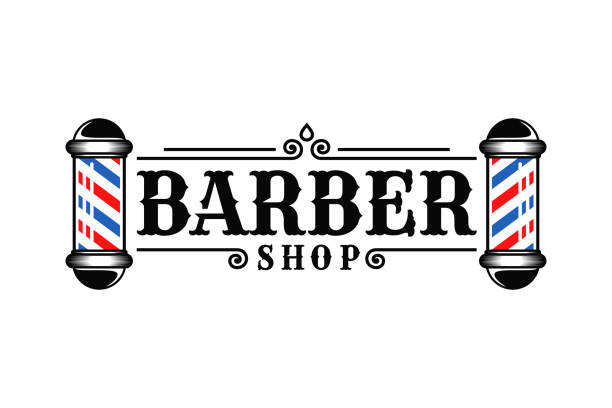
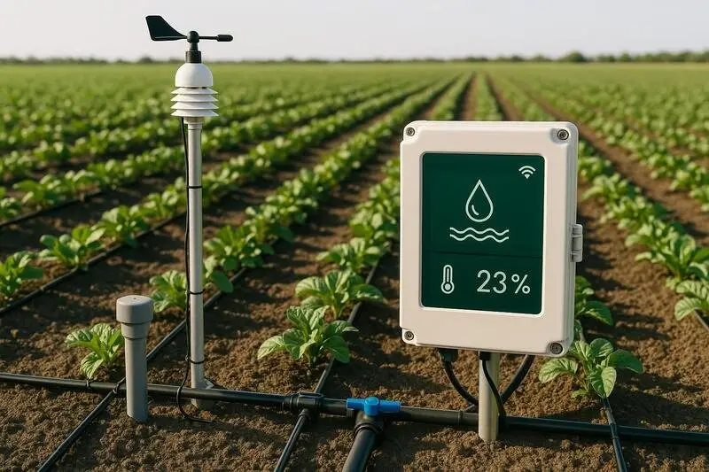

José Tomás Véliz Jorquera
Frontend
Estudiante enfocado en la organización de la navegación web, recopilación de evidencias técnicas y elaboración de reflexiones finales del proyecto.
Rol en el Equipo
Desarrollador orientado a la organización de proyectos y documentación técnica. Encargado de la estructura de navegación del sitio, el registro de evidencias del funcionamiento del sistema y la elaboración de análisis finales post-desarrollo
Tecnologías
HTML, C++, R estudio, CSS, JavaScript, Java, Python, SQL y Modelo Relacional.
Motores de Gestión
Coordinación del flujo de trabajo colaborativo, integracion continua y despliegue del proyecto asegurando la integridad del codigo.
Portafolio y Proyectos
Evidencias y áreas de trabajo en el proyecto
Desarrollo proyecto Gestión de Barbería
Plataforma web integral para la administración de un servicio de barbería, con enfoque en la gestión de turnos y el almacenamiento seguro de información.

Principales Características:
- Reserva de turnos en linea y seleccion de servicios.
- Panel de administración para gestión de barberos, disponibilidad de barberos.
- Registro y control de clientes e historial de Reservas.
Vehículo Agrícola Automatizado con Sensores
Sistema robótico móvil equipado para la automatización de procesos agrícolas, capaz de monitorear el entorno y accionar sistemas de riego autónomos según las condiciones de la tierra.

Características:
- Lectura de variables ambientales mediante sensores de temperatura y humedad del suelo.
- Control automático de sistemas de riego según las condiciones del suelo.
- Orientación práctica para la optimización de tareas en zonas agrícolas.
Auto Autónomo de Vigilancia con Inteligencia Artificial
Sistema de vigilancia móvil inteligente capaz de detectar y rastrear personas en tiempo real mediante una cámara, ajustando su posición automáticamente para mantener el enfoque.

Características:
- Detección de formas y personas mediante procesamiento de imagen.
- Seguimiento dinámico (el vehículo se desplaza siguiendo el movimiento del objetivo).
- Funcionalidad orientada a puestos de vigilancia y monitoreo autónomo.